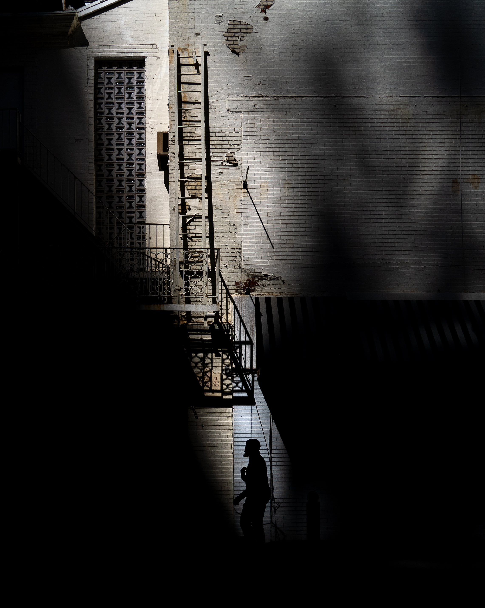

Winston Wu
Types of photography: Street Travel Fireworks
Introduction: I'm Winston. I'm a rising second year MBA student at the Wharton School, University of Pennsylvania. I was previously an investment banker in Asia. Currently, I'm based in Philadelphia. I enjoy including geometry and light and shadows into my photography
Origin story: I enjoyed taking pictures as a kid, though using film at that time made it an expensive endeavour. I got more serious about it in college. Then, Singapore hosted an international fireworks festival over a few days and I tried to photograph the displays. I failed, obviously (long exposure, handheld!) and was inspired by what I saw on forums. And so I started researching and experimenting in shooting fireworks. Eventually, I ventured to a number of fireworks displays in Japan. More recently, I went on a couple of overseas photography trips which introduced me to street photography. I fell in love with it and have been trying to develop my own voice and point of view. Philadelphia has served as a fantastic playground for me to do so. I recently took part in a collaborative photography gallery where a group of like-minded artists show their distinctive viewpoint of an "over shot" location in Philadelphia
Favourite photo: This photo captures all my favourite elements - street photography, frames, geometry, and shadows. There's also the element which I term “frameception” - a frame within a frame. This photo was a Global Winner of the Sony Alpha Instagram Competition 2020 from amongst 16k entries. This photo was taken at a void deck - an open space on the ground floor of a government housing block in Singapore. I had taken a break from my job with the intention of travelling the world, but Covid put a premature end to that. Constrained to my own backyard, I decided to explore Singapore, spending hours walking through these housing blocks in various neighbourhoods. I discovered a different perspective, and I fell in love with the framing opportunities these void decks offered. Many of them were designed with geometrical shapes embedded in the walls and columns. The shadow elements add a new dimension to a scene. I needed a subject so I waited, and this lady turned to me when she noticed my camera

Second favourite photo: I spotted this scene round the corner from the apartment building that I'm living at. I like the strip of light, the textures of the wall and colour tones. I waited for a subject to pass into the light and got a unique silhouette
Equipment used: Sony A7III, 24-105 f4, 16-35 f2.8, 100-400 f4/5.6
Advice for newbies: Find inspiration from different sources but always look to develop your own unique voice
See more of my work: Instagram Broader Perspectives